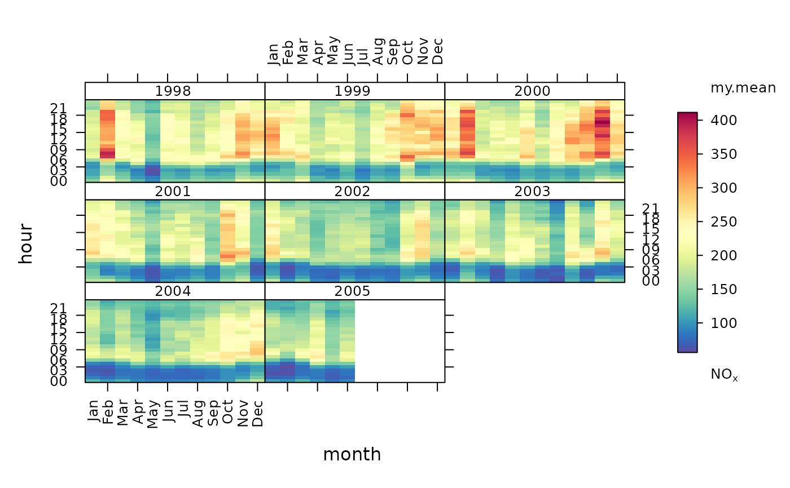

The trendLevel function provides a way of rapidly showing a large amount of data in a condensed form. In one plot, the variation in the concentration of one pollutant can to shown as a function of three other categorical properties. The default version of the plot uses y = hour of day, x = month of year and type = year to provide information on trends, seasonal effects and diurnal variations. However, x, y and type and summarising statistics can all be modified to provide a range of other similar plots.
Usage
trendLevel(
mydata,
pollutant = "nox",
x = "month",
y = "hour",
type = "year",
rotate.axis = c(90, 0),
n.levels = c(10, 10, 4),
limits = c(0, 100),
cols = "default",
auto.text = TRUE,
key.header = "use.stat.name",
key.footer = pollutant,
key.position = "right",
key = TRUE,
labels = NA,
breaks = NA,
statistic = c("mean", "max", "frequency"),
stat.args = NULL,
stat.safe.mode = TRUE,
drop.unused.types = TRUE,
col.na = "white",
plot = TRUE,
...
)Arguments
- mydata
The openair data frame to use to generate the
trendLevelplot.- pollutant
The name of the data series in
mydatato sample to produce thetrendLevelplot.- x
The name of the data series to use as the
trendLevelx-axis. This is used with theyandtypeoptions to bin the data before applyingstatistic(see below). Other data series inmydatacan also be used. (Note:trendLeveldoes not allow duplication inx,yandtypeoptions within a call.)- y
The names of the data series to use as the
trendLevely-axis and for additional conditioning, respectively. Asxabove.- type
See
y.- rotate.axis
The rotation to be applied to
trendLevelxandyaxes. The default,c(90, 0), rotates the x axis by 90 degrees but does not rotate the y axis. (Note: If only one value is supplied, this is applied to both axes; if more than two values are supplied, only the first two are used.)- n.levels
The number of levels to split
x,yandtypedata into if numeric. The default,c(10, 10, 4), cuts numericxandydata into ten levels and numerictypedata into four levels. (Notes: This option is ignored for date conditioning and factors. If less than three values are supplied, three values are determined by recursion; if more than three values are supplied, only the first three are used.)- limits
The colour scale range to use when generating the
trendLevelplot.- cols
The colour set to use to colour the
trendLevelsurface.colsis passed toopenColoursfor evaluation. See?openColoursfor more details.- auto.text
Automatic routine text formatting.
auto.text = TRUEpasses commonlatticelabelling terms (e.g.xlabfor the x-axis,ylabfor the y-axis andmainfor the title) to the plot viaquickTextto provide common text formatting. The alternativeauto.text = FALSEturns this option off and passes any supplied labels to the plot without modification.- key.header, key.footer
Adds additional text labels above and/or below the scale key, respectively. For example, passing the options
key.header = "", key.footer = c("mean","nox")adds the addition text as a scale footer. If enabled (auto.text = TRUE), these arguments are passed to the scale key (drawOpenKey) viaquickTextto handle formatting. The term"get.stat.name", used as the defaultkey.headersetting, is reserved and automatically adds statistic function names or defaults to"level"when unnamed functions are requested viastatistic.- key.position
Location where the scale key should be plotted. Allowed arguments currently include “top”, “right”, “bottom” and “left”.
- key
Fine control of the scale key via
drawOpenKey. See?drawOpenKeyfor further details.- labels
If a categorical colour scale is required then these labels will be used. Note there is one less label than break. For example,
labels = c("good", "bad", "very bad").breaksmust also be supplied if labels are given.- breaks
If a categorical colour scale is required then these breaks will be used. For example,
breaks = c(0, 50, 100, 1000). In this case “good” corresponds to values between 0 and 50 and so on. Users should set the maximum value ofbreaksto exceed the maximum data value to ensure it is within the maximum final range e.g. 100--1000 in this case.labelsmust also be supplied.- statistic
The statistic method to be use to summarise locally binned
pollutantmeasurements with. Three options are currently encoded: “mean” (default), “max” and “frequency”. (Note: Functions can also be sent directly viastatistic. However, this option is still in development and should be used with caution. See Details below.)- stat.args
Additional options to be used with
statisticif this is a function. The extra options should be supplied as a list of named parameters. (see Details below.)- stat.safe.mode
An addition protection applied when using functions directly with
statisticthat most users can ignore. This option returnsNAinstead of runningstatisticon binned subsamples that are empty. Many common functions terminate with an error message when applied to an empty dataset. So, this option provides a mechanism to work with such functions. For a very few cases, e.g. for a function that counted missing entries, it might need to be set toFALSE(see Details below.)- drop.unused.types
Hide unused/empty
typeconditioning cases. Some conditioning options may generate empty cases for some data sets, e.g. a hour of the day when no measurements were taken. Emptyxandycases generate 'holes' in individual plots. However, emptytypecases would produce blank panels if plotted. Therefore, the default,TRUE, excludes these empty panels from the plot. The alternativeFALSEplots alltypepanels.- col.na
Colour to be used to show missing data.
- plot
Should a plot be produced?
FALSEcan be useful when analysing data to extract plot components and plotting them in other ways.- ...
Addition options are passed on to
cutDatafortypehandling andlevelplotinlatticefor finer control of the plot itself.
Value
an openair object.
Details
trendLevel allows the use of third party summarising functions via the
statistic option. Any additional function arguments not included
within a function called using statistic should be supplied as a list
of named parameters and sent using stat.args. For example, the encoded
option statistic = "mean" is equivalent to statistic = mean,
stat.args = list(na.rm = TRUE) or the R command mean(x, na.rm= TRUE).
Many R functions and user's own code could be applied in a similar fashion,
subject to the following restrictions: the first argument sent to the
function must be the data series to be analysed; the name `x' cannot be used
for any of the extra options supplied in stat.args; and the function
should return the required answer as a numeric or NA. Note: If the
supplied function returns more than one answer, currently only the first of
these is retained and used by trendLevel. All other returned
information will be ignored without warning. If the function terminates with
an error when it is sent an empty data series, the option
stat.safe.mode should not be set to FALSE or trendLevel
may fail. Note: The stat.safe.mode = TRUE option returns an NA without
warning for empty data series.
See also
Other time series and trend functions:
TheilSen(),
calendarPlot(),
smoothTrend(),
timePlot(),
timeProp(),
timeVariation()
Examples
#basic use
#default statistic = "mean"
trendLevel(mydata, pollutant = "nox")
#applying same as 'own' statistic
my.mean <- function(x) mean(x, na.rm = TRUE)
trendLevel(mydata, pollutant = "nox", statistic = my.mean)

#alternative for 'third party' statistic
#trendLevel(mydata, pollutant = "nox", statistic = mean,
# stat.args = list(na.rm = TRUE))
if (FALSE) {
# example with categorical scale
trendLevel(mydata, pollutant = "no2",
border = "white", statistic = "max",
breaks = c(0, 50, 100, 500),
labels = c("low", "medium", "high"),
cols = c("forestgreen", "yellow", "red"))
}